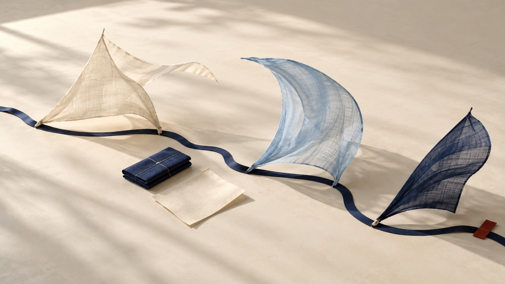
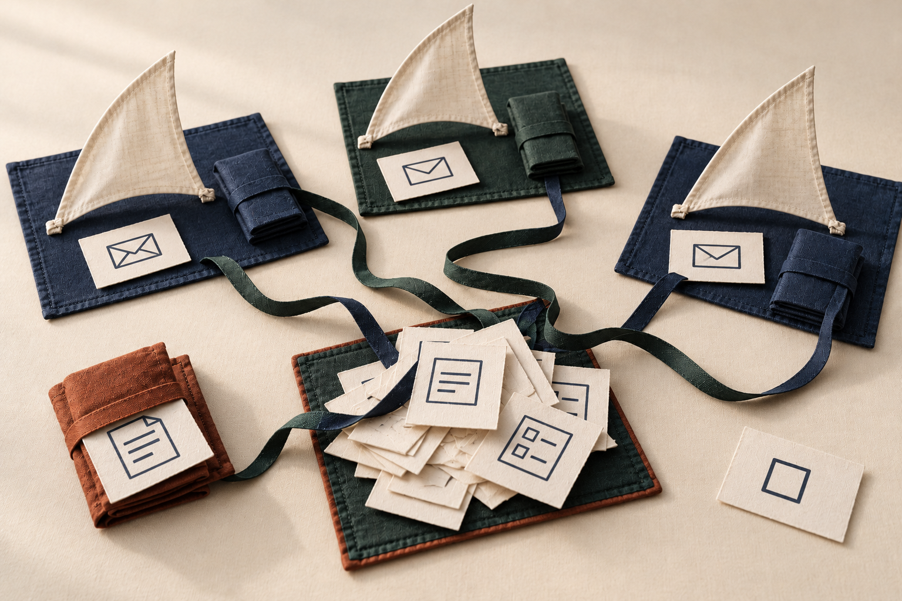
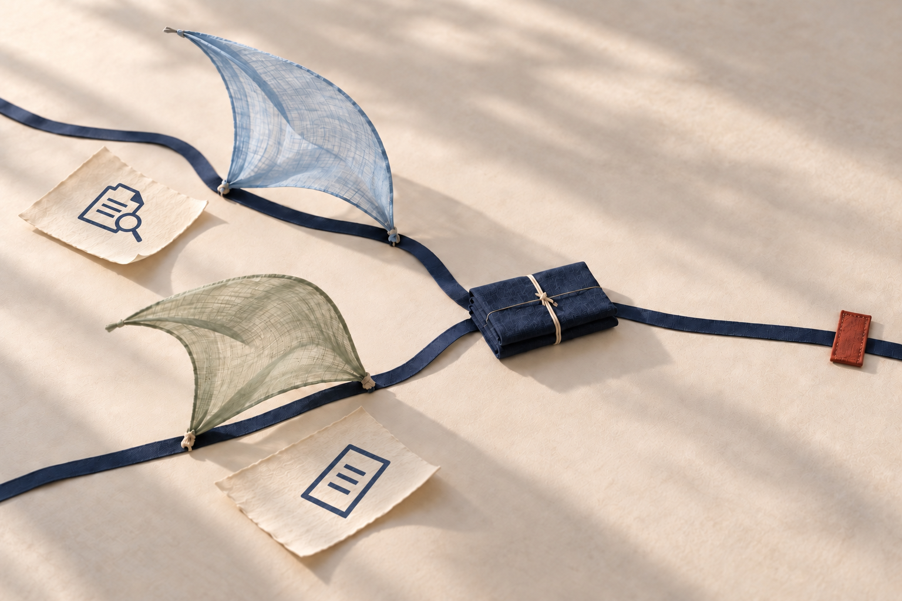
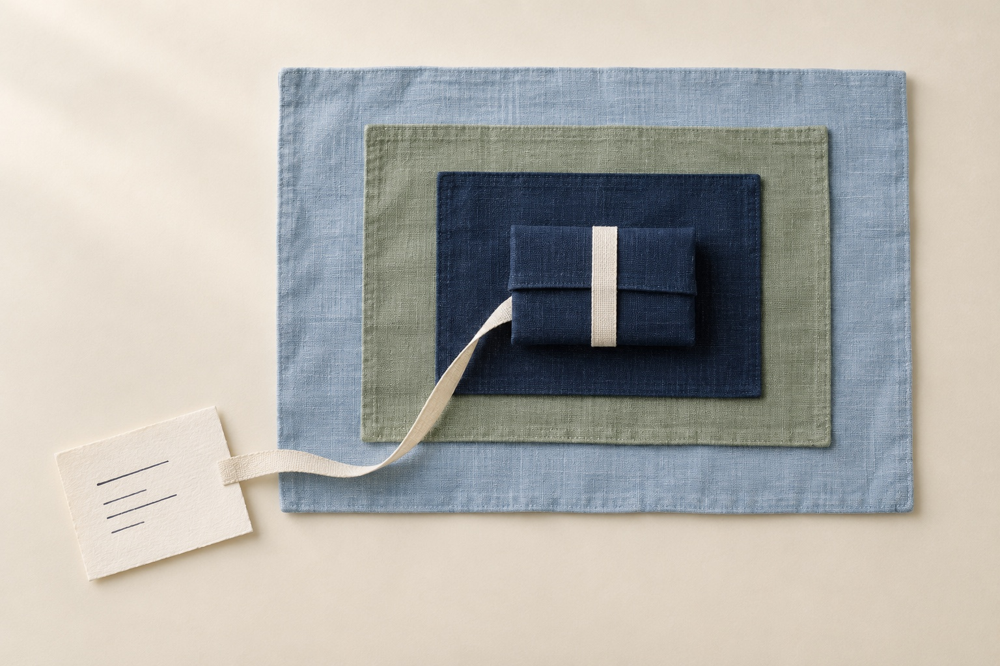
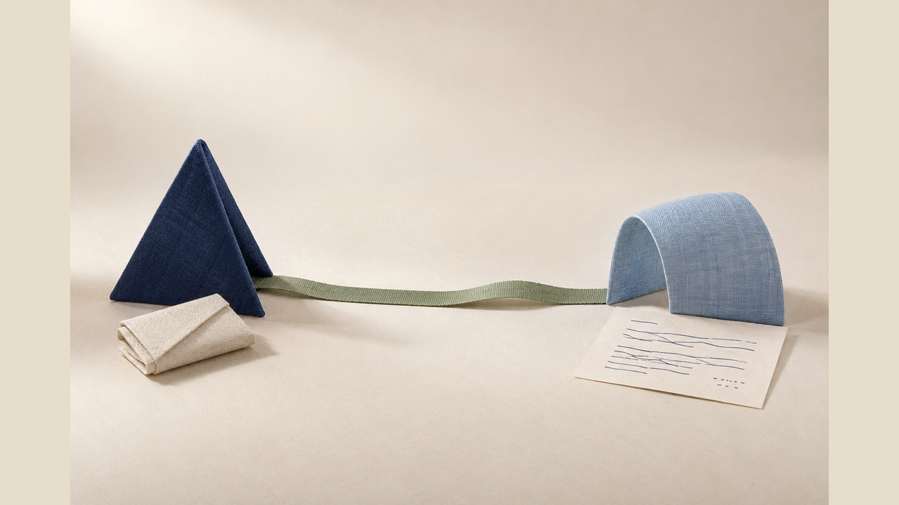
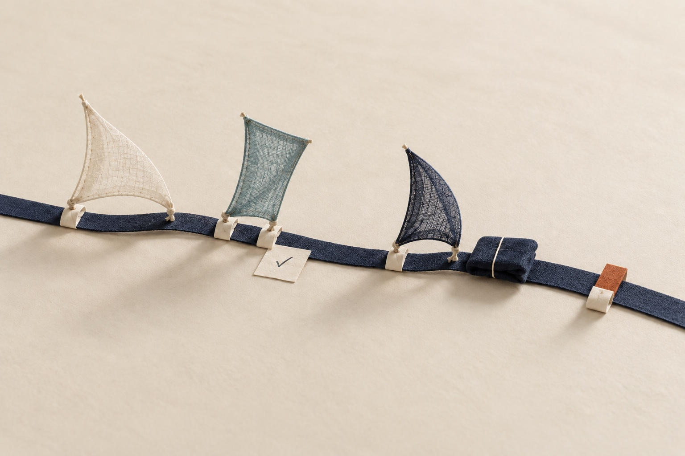
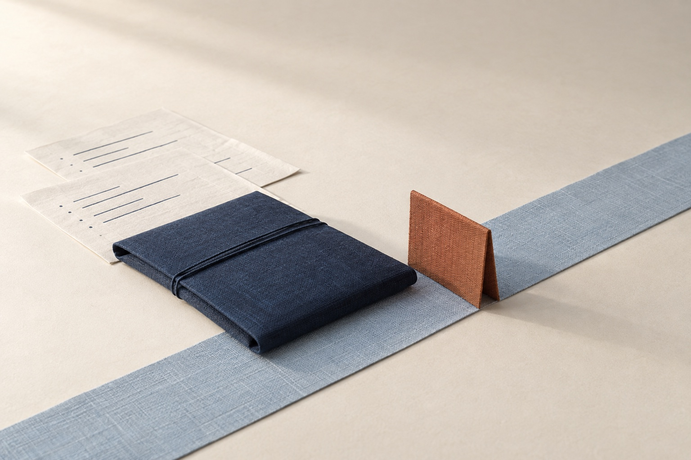
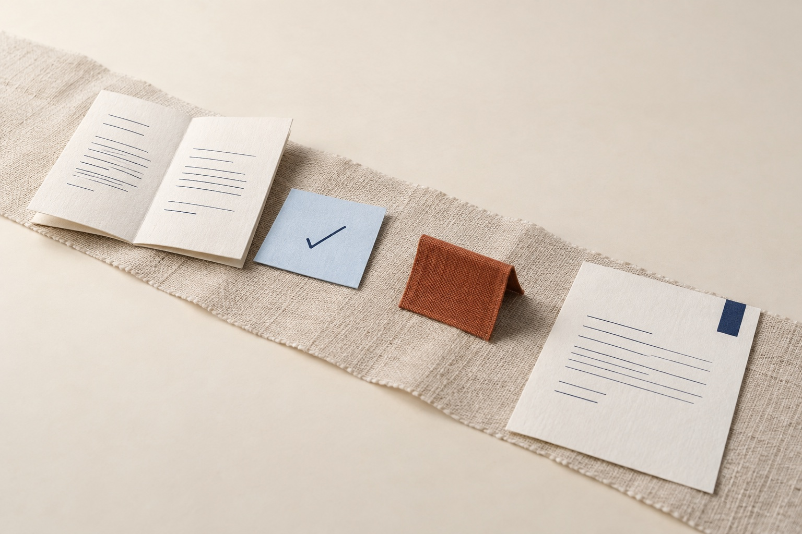
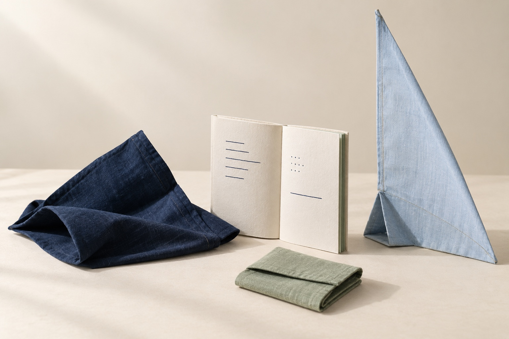
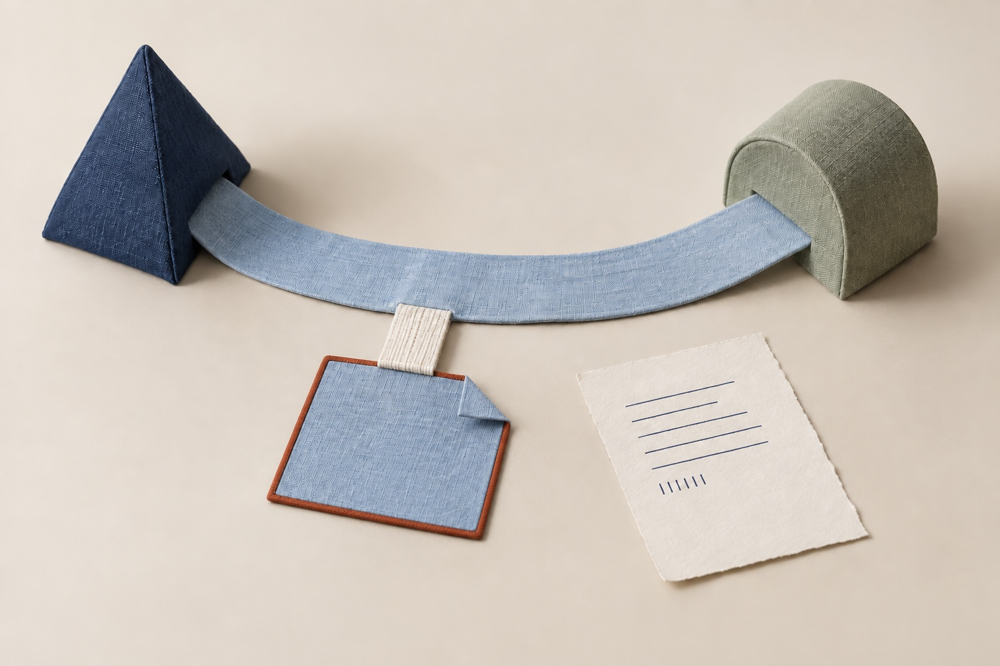

Delegate meaningful work
The operating system for agentic organizations.
Give agents real responsibility under authority you define.
Get started
When sessions and chats are the operating model
You are the coordination layer.

- You move context between sessions and chats.
- You sequence every agent.
- You check whether the work really happened.
A different way forward
Move from babysitting agent sessions to governing meaningful work.

- Responsibilities stay tied to the work.
- Explicit dependencies govern the next step.
- Evidence distinguishes progress from completion.
Connect your agent workspacePlugin-led setup is the intended entry point. Use the maintained guide for your harness; availability varies.
Planned product simulation, not a captured session. No plugin installation, mailbox access, grant, send, payment or product request happens on this page. Data, IDs and results are synthetic. Email provider access and workflow proposals are separate from Neotoma storage. Correction does not automatically attach a stored source to its field observation. Ateles is the operator overlay on the connected Neotoma, not a separate account. Role contributions, draft preparation and checkpoints are intended outcome representations, not executable Ateles tool names or proof of a running workflow engine.
Add Ateles
Ateles
Prepare and review delegated work in this AI tool.
Uses the connected Demo Neotoma. No second account or store.
Set preparation authority
Inspect the selected invoice thread
Email · bounded sampleWorkingComplete{
"folder": "Selected inbox",
"period": "Last 30 days",
"mode": "read-only sample"
}Invoice thread found
Invoice AS-1042 · October design work
Accounts · Acorn StudioOur invoice AS-1042 is attached: EUR 1,200, due 22 October 2026. Please let us know if you need any details.
Declare contributions and expected results
Prepare the work record
Neotoma · storeWorkingComplete{
"entities": [
{
"entity_type": "task",
"title": "Review invoice AS-1042",
"description": "Check the source, deadline and amount; prepare an exact reply for review.",
"status": "pending"
}
]
}Work record prepared; read-back next
Resolve invoice AS-1042 with its customer context intact.
Review the exact unsent draft
Neotoma · retrieve_entity_snapshotWorkingComplete{
"entity_id": "ent_000000000000000000000044"
}Declared work and pending state read back
Thanks for invoice AS-1042. We have it on record and are reviewing the amount and 22 October deadline.
Held for your reviewComplete demo transcript
Add Ateles
Ateles
Prepare and review delegated work in this AI tool.
Uses the connected Demo Neotoma. No second account or store.
Set preparation authority
Inspect the selected invoice thread
Email · bounded sampleWorkingComplete{
"folder": "Selected inbox",
"period": "Last 30 days",
"mode": "read-only sample"
}Invoice thread found
Invoice AS-1042 · October design work
Accounts · Acorn StudioOur invoice AS-1042 is attached: EUR 1,200, due 22 October 2026. Please let us know if you need any details.
Declare contributions and expected results
Prepare the work record
Neotoma · storeWorkingComplete{
"entities": [
{
"entity_type": "task",
"title": "Review invoice AS-1042",
"description": "Check the source, deadline and amount; prepare an exact reply for review.",
"status": "pending"
}
]
}Work record prepared; read-back next
Resolve invoice AS-1042 with its customer context intact.
Review the exact unsent draft
Neotoma · retrieve_entity_snapshotWorkingComplete{
"entity_id": "ent_000000000000000000000044"
}Declared work and pending state read back
Thanks for invoice AS-1042. We have it on record and are reviewing the amount and 22 October deadline.
Held for your review01 · Purpose
Turn intent into accountable work.
Give an ask an outcome, the context to act and a place in the bigger picture.
Email exampleOne invoice email serves a useful outcome: keep the customer record current and prepare a response.
Neotoma · storeDemo{
"entity_type": "task",
"title": "Resolve invoice AS-1042",
"status": "pending",
"description": "Prepare invoice review and exact customer reply."
}
02 · Coordination
Coordinate distinct contributions.
Give contributors distinct roles, responsibilities and an inspectable relationship to the work.
Email exampleSeparate responsibilities inspect the invoice, update the customer context and prepare a reply.
Work preparation · contributor rolesDemo{
"records": "Invoice + customer basis",
"finance": "Review amount and due date",
"comms": "Prepare reply draft"
}
03 · Workflows
Give work a route—not another chat.
Sequence contributions, bring independent checks together and hold progress where a decision is needed.
Email exampleInvoice review informs the reply draft; neither step authorizes sending or payment.
Work preparation · declared sequenceDemo{
"sequence": [
"Inspect email + attachment",
"Review invoice",
"Draft reply",
"Return exact artifact"
]
}
04 · Authority
Define authority where action matters.
Let preparation move forward within scope. Hold consequential action at the boundary you define.
Email exampleReview the exact reply before sending. Payment needs its own decision.
Action review · authority boundaryDemo{
"prepare": [
"Invoice review",
"Reply draft"
],
"hold": [
"Send",
"Payment",
"New access"
]
}
05 · Accountability
Verify real outcomes.
Connect the result to its contributors, its reviewed version and evidence of what actually happened.
Email exampleConfirm the prepared records and reply draft. Keep “prepared” separate from “sent” or “paid”.
Artifact review · exact draftDemo{
"invoice": "AS-1042",
"amount_due": 1080,
"date_due": "2026-10-29",
"artifact": "Reply draft · not sent"
}
06 · Continuity
Carry responsibility across sessions.
Resume from retained context, decisions and results, with the next action still connected to its purpose.
Email exampleA later email extends the deadline; continue the same invoice work from retained context.
Neotoma · retrieve_entity_snapshotDemo{
"entity_id": "ent_000000000000000000000044"
}
07 · Improvement
Extend and improve the organization.
Add declared roles and workflows. Turn retained findings into governed improvements.
Email exampleAdd a bounded customer-record contribution when the selected email workflow needs it.
Work preparation · added contributionDemo{
"additional_role": "Reconcile customer records",
"inputs": [
"Invoice AS-1042",
"Linked contact"
],
"hold": "Existing send/payment boundary"
}
Get started
Choose how you want to run it.

Hosted
Use hosted Ateles
Explore the proposed hosted path and its current scope.
Explore cloud options
Open source
Install and operate yourself
Fork and adapt the hands-on reference to your operation.
Explore self-managed setup
Assisted
Have it operated for you
Agree a scope for setup, hosting and ongoing operation.
Explore managed setupWhom it’s for
For operators turning agent use into an organization.
You run a company or a substantial operational practice. You want agents to carry real responsibility—not another set of conversations to supervise.
Explore your needs and the fitEvaluate with your agent
Ask for a second opinion.
Find a useful first workflow with the context you choose to share.
Visit this website and tell me if Ateles fits my workflow. Explain its benefits, limits, and current readiness. If I have already explicitly authorized your access to my recent emails and agent conversations, use a small relevant sample to identify recurring workflows. Otherwise, ask me about my tools, repeated tasks, and where context gets lost. Say whether my existing tools are enough and suggest one bounded first workflow. Do not request new access or send messages.